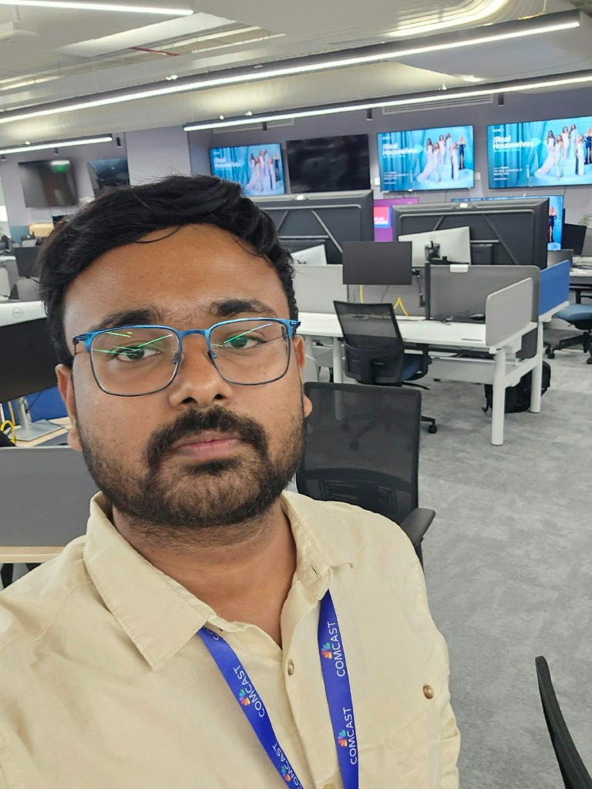
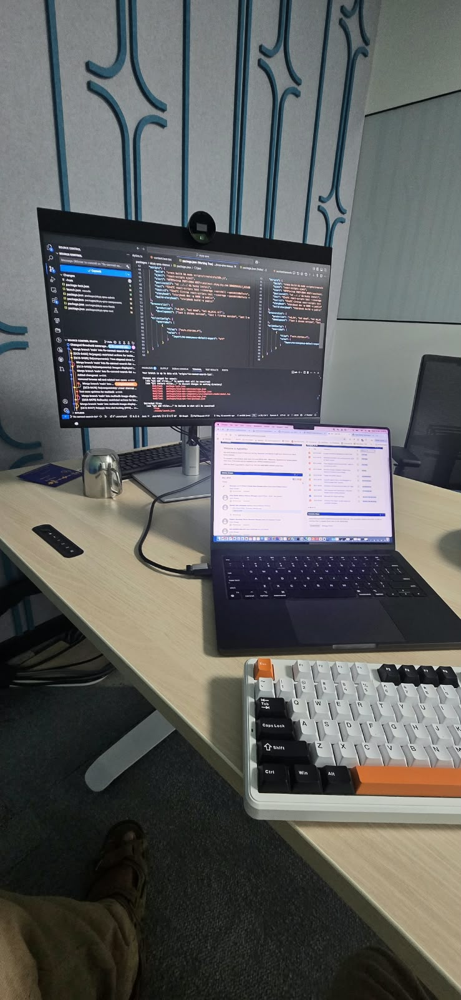
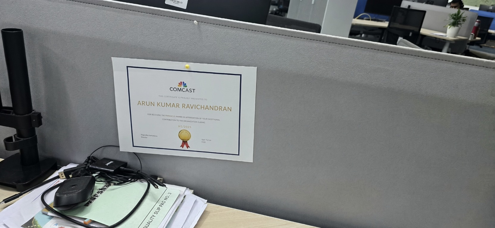

Full-stack developer based in Chennai, with 6+ years shipping enterprise SPAs,
high-volume Java services, and production LLM agents with RAG, tool calling, and guardrails.
Chennai, India · Development Engineer at Comcast · English & Tamil
Features, fixes, and performance work across React and Java Spring Boot for a platform
that delivers content to millions of set-top boxes in the UK, Italy, and Germany.
LLM pipelines that cut editor turnaround from hours to seconds, and a RAG agent that
answers CMS questions by calling internal APIs when asset data is missing.
Shipping is ownership. Clear interfaces, code someone else can change,
and production that stays observable when the volume shows up.
Frontend
React.js
TypeScript
JavaScript (ES6+)
Redux
Tailwind CSS
HTML5
Backend
Java
Spring Boot
Microservices
Spring Security
OAuth 2.0
Node.js
AI
AI agents
LLM integration
LangChain
LangGraph
RAG
Embeddings
Vector search
Reranking
Tool calling
Data
MySQL
SQL Server
Redis
MongoDB
Testing
Jest
Playwright
Mockito
JUnit
Postman
DevOps & cloud
Docker
Kubernetes
Jenkins
Git
GitHub
AWS EKS
S3
EC2
Lambda
CloudFormation
Observability
Elasticsearch
Logstash
Kibana
Splunk
Grafana
Prometheus
Engineering
API design
Load handling
Caching
Modular architecture
Agile / Scrum
Code reviews
Mentoring
What the work did
~95%faster editor turnaround
$50koperational cost reduced
60%less coordination on CMS queries
2.5sCMS first load, down from 20s
70%better responsiveness, 5,000+ users
40%faster table loads at Celebrus
Experience
Comcast India Engineering Center
Development Engineer 3 · Chennai
Full-stack delivery in React and Java Spring Boot for Sky Q across the UK, Italy, and Germany.
Jenkins, Docker, Kubernetes, and the observability around them.
LLM agents with RAG, tool use, and deterministic fallbacks.
Spring Security, OAuth 2.0, JWT, and PKCE. Legacy systems moved to AWS EKS.
Snyk and OWASP remediation. Reviews, tests, and mentoring inside the team.
Celebrus Technologies
Software Engineer · Chennai
Software Engineer Nov 2023 – Sep 2024
React monitoring dashboards on PatternFly, with Spring Boot and Spring MVC behind them.
Server-driven UI: APIs returned data and component metadata so the frontend could render dashboards dynamically.
OOP, SOLID, JUnit 5, refactoring, and reviews to keep the surface smaller.
Junior Software Developer Mar 2021 – Nov 2023
React features from scratch: reusable components, forms, and CRUD tables, including higher-order components.
Celebrus CDI for Salesforce, with Node.js on the backend and a shared React dashboard system.
Production bug fixes.
Software Engineer Trainee Jun 2020 – Mar 2021
Production HR management application with Java, JSP, and Servlets.
Content Security Policy and OWASP vulnerability fixes.
Also shipped a machine-learning license and session-usage feature so support and sales could act before a renewal slipped, and rebuilt the React tables with custom hooks — about 40% faster to load, and the legacy tables gone.
Amazon
Machine Learning Data Associate · Chennai
Data-labeling workflows across text, speech, and multimodal sets for voice-enabled devices, with annotation quality held consistent.
From services to shorelines.
I studied engineering at Anna University and still build from Chennai.
The job is enterprise software. The city is the long coastline I go home to.

at work

the deskchennai

Pinnacle Award
Education
Bachelor of Engineering, Anna University, Chennai · 2014–2018
Languages
English — fluent · Tamil — fluent
How I work
Status that product and business teams can use. Issues diagnosed before they spread. Recurring work automated. New tools picked up while the current release still ships.
that’s all folks :)
Let’s build something that lasts.
A product, a platform, or a straight conversation. I’m easy to reach.